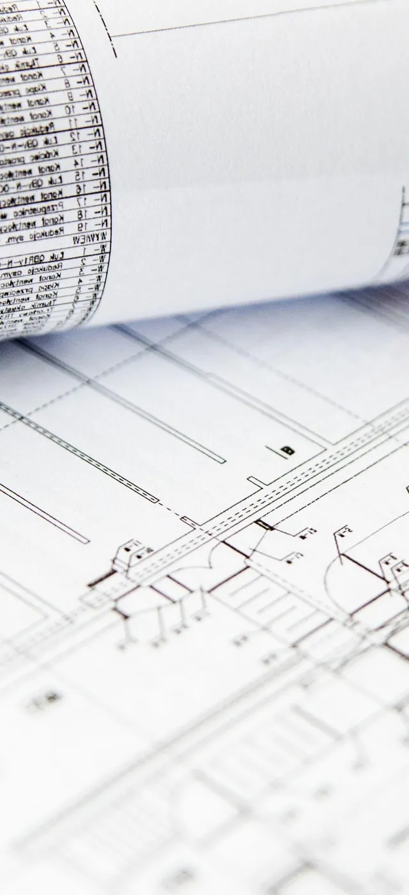
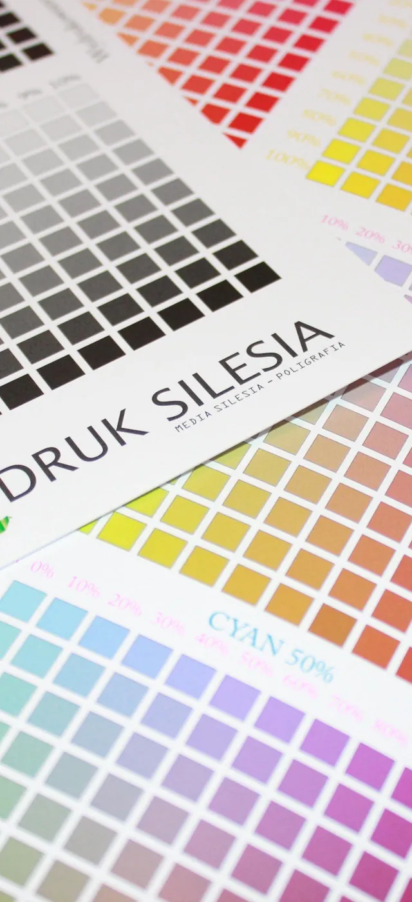
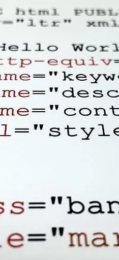
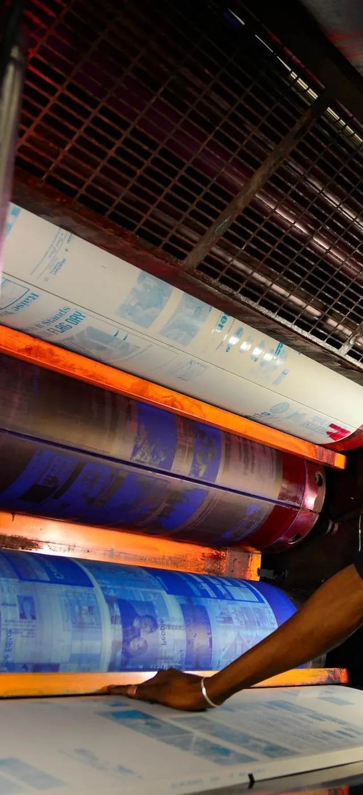

Diensten
Wat ik voor u kan doen
Van één logo tot een complete uitstraling met website en drukwerk. Kies wat u nodig heeft. Alles wat ik maak, past bij elkaar.
-

Logo-ontwerp
Een eenvoudig, herkenbaar teken dat werkt op elk formaat.
-

Huisstijl
Vaste kleuren, letters en beeld, zodat alles van u bij elkaar hoort.
-

Website laten maken
Snel, duidelijk, goed op de telefoon en goed te vinden.
-
Social media
Templates en profielen waarmee u zelf mooi en snel post.
-

Drukwerk
Visitekaartjes, flyers en posters, drukklaar aangeleverd.
-
Videografie en advies
Video, marketingadvies, onderhoud en trainingen.